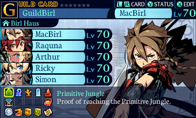
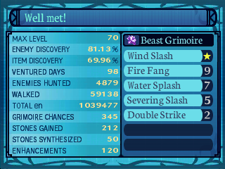
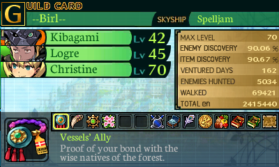
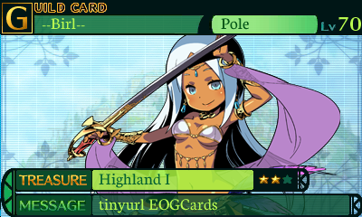
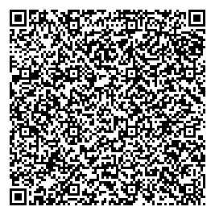
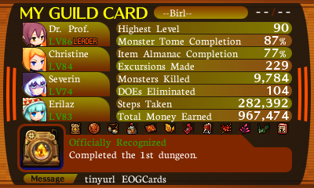
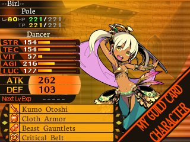
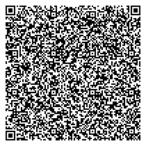
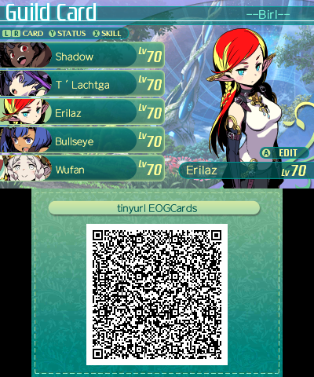

. http://tinyurl.com/EOGcards
| Etrian Odyssey Untold: The Millennium Girl |

| 
|
| |
Etrian Odyssey IV: Legends of the Titan |

| 
| 
| |
Etrian Odyssey Mystery Dungeon |

| 
| 
| |
Etrian Odyssey V: Beyond The Myth |
|

| |
|
Etrian Odyssey Mystery Dungeon 2 |
|
Not yet |
|
Etrian Odyssey X (Nexus): |
|
Not yet |
|
Pooka D.O.E. hunting in the Mystery Dungeon's Thunderous Cave
- Level 60+: 1 Protector (heavy equipped), 1 Medic, 2 Gunners
- Inventory: Swapping Sigils, Pain Sigils
- Use a Gunner to make sure you can hit the Pooka.
- Once a reaction occurs (hit or dodge, not a miss) have Protector
throw a Swapping Sigil to switch places with the Pooka.
- Protector will re-appear elsewhere in dungeon; should be fine
withut manual intervention.
- Try to position Medic in a corner of room to prevent blowback
from Pooka's "Go Away!". Gunners can still hit from a good
distance.
- Using Medic as Leader (active member) continue to throw Pain
Sigils until Pooka is in a state of Pain Trade.
- Keep hitting Pooka with Medic and Gunners (and Pain Sigils)
until the next "Go Away!". The damage dealt to the Medic
will 'Pain Trade' back to the Pooka, killing it.
http://tinyurl.com/EOGcards